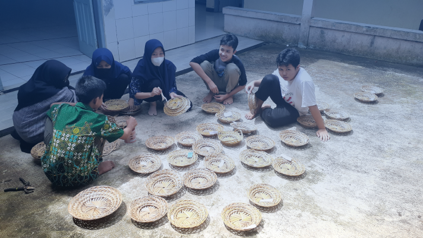
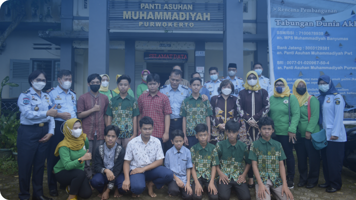

Program & Rutinitas

Program Keterampilan
- Mengembangkan Potensi Diri : Membantu anak-anak mengidentifikasi dan mengembangkan bakat serta minat mereka dalam berbagai bidang keterampilan.
- Meningkatkan Kemandirian: Membekali anak-anak dengan keterampilan praktis yang dapat digunakan untuk mandiri dan berkontribusi dalam masyarakat.
- Persiapan Masa Depan: Menyiapkan anak-anak untuk memasuki dunia kerja dengan keterampilan yang relevan dan dibutuhkan.
- Meningkatkan Kepercayaan Diri: Memberikan pengalaman sukses dalam berbagai kegiatan keterampilan untuk meningkatkan kepercayaan diri mereka.
Program Pendidikan
- Menyediakan Pendidikan Formal: Menjamin semua anak mendapatkan pendidikan formal sesuai dengan kurikulum nasional di sekolah-sekolah lokal.
- Pengayaan Pendidikan: Memberikan tambahan pelajaran dan bimbingan untuk meningkatkan prestasi akademik anak-anak.
- Pengembangan Karakter: Menanamkan nilai-nilai moral dan etika melalui pendidikan agama dan kegiatan karakter.
- Pendidikan Non-Formal: Menyediakan pelatihan keterampilan dan pendidikan informal yang mendukung perkembangan anak secara holistik.

Program Kesehatan
- Menjaga Kesehatan Anak-Anak: Memastikan setiap anak mendapatkan perawatan kesehatan yang baik dan teratur.
- Pencegahan Penyakit: Mengidentifikasi dan mencegah penyakit melalui pemeriksaan rutin dan vaksinasi.
- Pendidikan Kesehatan: Memberikan edukasi tentang pentingnya kebersihan, gizi, dan gaya hidup sehat.
- Perawatan Medis: Memberikan penanganan medis yang cepat dan tepat bagi anak-anak yang sakit atau membutuhkan perawatan khusus.
Program Agama
- Meningkatkan Pemahaman Agama: Membekali anak-anak dengan pengetahuan agama yang baik dan benar sesuai dengan keyakinan mereka.
- Mengembangkan Akhlak Mulia: Menanamkan nilai-nilai moral dan etika yang positif dalam kehidupan sehari-hari.
- Membangun Kedisiplinan dan Tanggung Jawab: Melatih anak-anak untuk disiplin dan bertanggung jawab melalui ajaran dan praktik keagamaan.
- Mendukung Kesejahteraan Spiritual: Membantu anak-anak menemukan ketenangan dan kebahagiaan melalui kegiatan keagamaan dan spiritual.